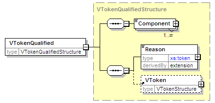

element
VTokenQualified
diagram

namespace
urn:oasis:names:tc:evs:schema:eml
type
VTokenQualifiedStructure
properties
content
complex
children
Component
Reason
VToken
used by
complexTypes
ProxyStructure
VoterIdentificationStructure
source
<
xs:element
name
=
"VTokenQualified
"
type
=
"VTokenQualifiedStructure
"/>
XML Schema documentation generated by
XMLSpy
Schema Editor
http://www.altova.com/xmlspy